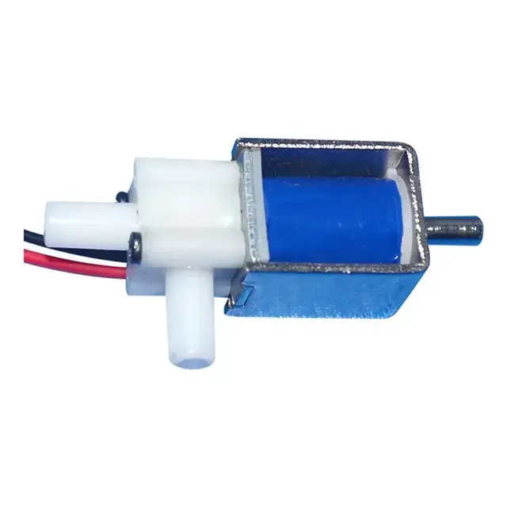
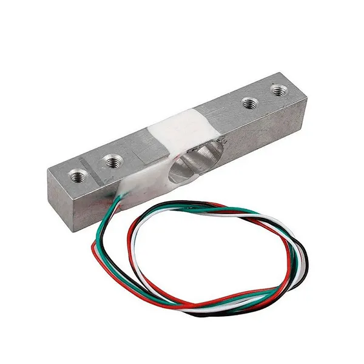

Massa total e tara
A balança mede tudo que está sobre a plataforma. A tara corresponde à estrutura/recipiente; subtraí-la produz uma massa estimada do conteúdo, não uma medição direta de GLP.
Este guia organiza a montagem acadêmica do SafeGas, a calibração da balança e os testes de comunicação. O protótipo usa ar atmosférico e não deve ser instalado em uma rede residencial de GLP.

Confira os componentes antes de energizar. Não conecte a FA0520E a uma instalação de GLP e não use um botijão P13 real sobre a balança.
Execute os testes com o circuito desenergizado durante a montagem e com supervisão. A demonstração não substitui um sistema certificado de segurança para GLP.

Conecte o MQ-2 ao ESP32 #2, instale o buzzer e os indicadores quando disponíveis. Use divisor de tensão no sinal analógico se necessário e mantenha o circuito sem GLP.

Ligue HX711 e célula de carga ao ESP32 #1. Conecte o relé à FA0520E e à fonte de 12 V conforme o circuito experimental; a bomba produz apenas fluxo de ar.

Com a plataforma vazia, execute `tare`. Depois aplique um peso conhecido e execute `calibrate

Verifique ESP-NOW entre os módulos, MQTT do ESP32 #1 e os tópicos de telemetria. Teste a válvula com ar: sem bobina, o ar sai pelo bocal metálico (OPEN); energizada, o bocal metálico bloqueia e o ar é desviado ao bocal plástico (CLOSED).
O ESP32 #2 envia as leituras do MQ-2 ao ESP32 #1 por ESP-NOW. Apenas o ESP32 #1 conversa com o backend por Wi-Fi e MQTT, usando os tópicos safe-gas/esp1/telemetry, safe-gas/esp1/status, safe-gas/esp1/commands e safe-gas/esp1/commands/ack.
A balança mede tudo que está sobre a plataforma. A tara corresponde à estrutura/recipiente; subtraí-la produz uma massa estimada do conteúdo, não uma medição direta de GLP.
OPEN é a bobina desenergizada, com passagem pelo bocal metálico. CLOSED é a bobina energizada, bloqueando esse bocal e desviando o ar ao bocal plástico.
A FA0520E não é certificada para GLP e retorna ao estado desenergizado quando perde energia. O circuito usa somente ar atmosférico e não é equipamento residencial.